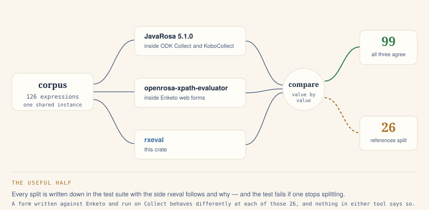
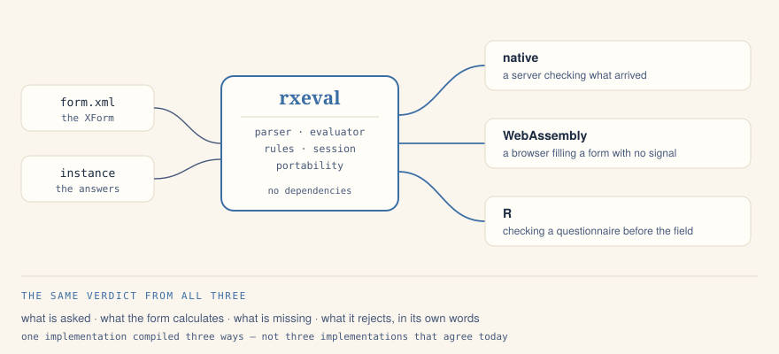

relevant · constraint · required · calculate
Until something runs it, a server can only take whatever a device sends and hope the device was right. rxeval is that something: XPath 1.0 with the OpenRosa extensions, evaluated over a form instance, with no dependencies — on a server, in a browser through WebAssembly, and in R.
session.set("/data/age", "9")?;
let outcome = session.recompute();
// what the form now says, and only what changed
outcome.calculated {"/data/adult": "no", "/data/years_left": "9"}
outcome.relevant {"/data/guardian": true}
outcome.missing ["/data/guardian"]
outcome.invalid []A guardian is required only for a child, so it becomes missing the moment the age says nine — and stops being missing the moment it says forty.
the problem this crate exists for
ODK forms are evaluated by two implementations: JavaRosa,
inside ODK Collect and KoboCollect, and Enketo's
openrosa-xpath-evaluator, inside web forms.
Neither is a superset of the other, and the gaps do not announce themselves:
an expression Collect cannot evaluate usually yields nothing rather
than an error. The form fills in, the interview finishes, and a column comes
back empty.
| expression | JavaRosa | Enketo | rxeval follows |
| resident[2]/name | nothing at all | the second one | Enketo |
| last() · floor() · ceiling() | absent | present | Enketo |
| //name | no // axis | descendant search | Enketo |
| regex("a123…b", "[0-9]{11}") | anchored → false | unanchored → true | JavaRosa |
| round(-1.5) | −1 (half up) | −2 (away from zero) | Enketo |
| boolean-from-string("TRUE") | true | false | JavaRosa |
| distance() · area() | full precision | rounded to 2 dp | JavaRosa |
Seven of twenty-six. Every rule in this crate was decided by putting the same expression to both engines and reading the two answers — and each split is written into the test suite with the side rxeval follows and why. The test fails if a recorded disagreement stops disagreeing, because that is news too.

before anyone collects with it
Because the two languages differ, a form can be correct in one place and quietly wrong in the other. rxeval reads a form and says so — with the bind it belongs to, what breaks where, and what to write instead.
/data/resident[2]/name (relevant): a bare positional predicate —
JavaRosa returns nothing for [n]; use [position() = n] on Collect /
KoboCollect. Write [position() = 2] instead.
/data/total (calculate): /p/morador/maior, which this form's instance
has no node for — the path matches nothing, so the rule reads an empty
node-set: a calculation comes out 0, a comparison comes out false, and a
relevant hides its question for the whole of fieldwork, identically on
both engines. Write /data/morador/maior instead.The second one is not a portability problem at all: it travels perfectly and is wrong everywhere it goes. It is reported here because it is found the same way and matters more — nothing else in the ecosystem catches it, and a calculation that silently comes out zero is discovered when the report is written, not when the data is collected.
two directions
Rules answers questions about a
finished submission: is this valid, what does it calculate to, which nodes
were relevant. That is the right shape for a server checking what arrived,
and the wrong shape for a screen someone is typing into.
Session is the other direction.
It holds the instance, applies what the form derives, and reports what
moved. Calculations run in dependency order, so one feeding another settles
in a single pass; only paths whose value actually changed are reported,
because a renderer redrawing every calculated field on every keystroke
fights the cursor.
Deliberately the same engine as the server check. A form that behaves one way while it is being filled and another way when it arrives is worse than one that is wrong consistently: only the first kind produces data nobody can explain.
session.add_row("/data/resident")?;
session.set("/data/resident[1]/age", "40")?;
session.set("/data/resident[2]/age", "9")?;
session.recompute();
session.get("/data/resident[1]/adult") "1"
session.get("/data/resident[2]/adult") "0"
session.get("/data/total_adults") "1"
// and relevance is per row, too
outcome.relevant["/data/resident[2]/works"] falseone implementation, compiled three ways
A web form that asked a server what its own rules mean needs a connection for every keystroke, which rules out the place survey work happens — a bus stop, a doorway, a basement. Compiling the same Rust to WebAssembly removes the network from the interview without introducing a second implementation to drift from the first.

native
A server checking what arrived, against the form it published.
WebAssembly
A browser filling a form with no signal, deciding locally.
R
Checking a questionnaire from an analysis script, before the field.
install
[dependencies]
rxeval = "0.1"rxeval = { version = "0.1",
default-features = false }
The only dependency is a regex engine, behind a feature. A build without it
refuses regex() rather than
guessing at it: a rule that did not run is not a rule that passed.